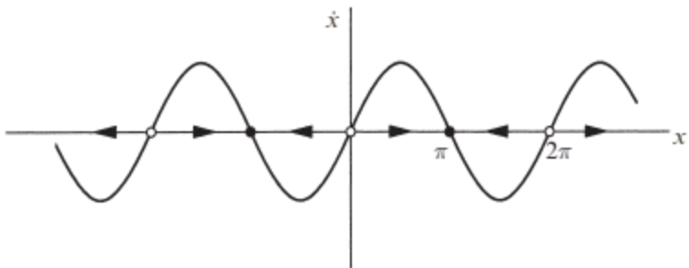

A more physical way to think about the vector field: imagine that fluid is flowing steadily along the \( x \)-axis with a velocity that varies from place to place, according to the rule \( \dot{x} = \sin x \). As shown in the figure, the flow is to the right when \( \dot{x} > 0 \) and to the left when \( \dot{x} < 0 \). At points where \( \dot{x} = 0 \), there is no flow; such points are therefore called fixed points. There are two kinds of fixed points: solid black dots represent stable fixed points (often called attractors or sinks, because the flow is toward them) and open circles represent unstable fixed points (also known as repellers or sources)
\[ \dot{x} = \sin x \]
The same reasoning applies to any initial condition \(x_0\). Figure 2.1.1 shows that if \(\dot{x} > 0\) initially, the particle heads to the right and asymptotically approaches the nearest stable fixed point. Similarly, if \(\dot{x} < 0\) initially, the particle approaches the nearest stable fixed point to its left. If \(\dot{x} = 0\), then \(x\) remains constant
The curve is concave up at first, and then concave down; this corresponds to the initial acceleration for \(x < \pi/2\), followed by the deceleration toward \(x = \pi\)
1Strogatz, S.H. (2015). Nonlinear Dynamics and Chaos: With Applications to Physics, Biology, Chemistry, and Engineering (2nd ed.). CRC Press.